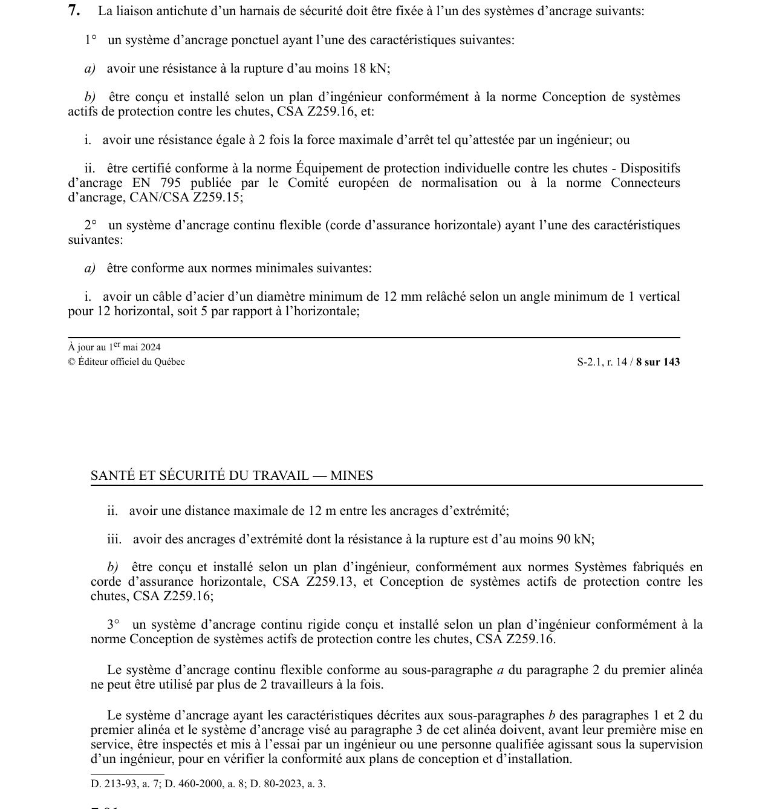

art-7-RSSM : systèmes ancrage harnais certifiés
Un article du wiki ⚖️ Recueil législatif
En bref
La liaison antichute doit être fixée à un système d'ancrage ponctuel. Il s'agit d'une obligation.
- 12 m, ancrages ≥ 90 kN, ou plan d'ingénieur CSA Z259.13 + Z259.16).
- Ancrage ponctuel : résistance ≥ 18 kN ou plan ingénieur CSA Z259.16 (2× force max. ou certifié EN 795 / CAN/CSA Z259.15)
- Corde horizontale : câble acier ≥ 12 mm diam., angle relâché ≥ 1/12 (5°), distance max. 12 m entre ancrages, résistance ancrages ≥ 90 kN, ou plan ingénieur CSA Z259.13 + Z259.16.
- décalage horizontal max. 3 m ou 22°.
- Max. 2 travailleurs sur système continu flexible (al. a)
- Inspection et mise à l'essai avant première mise en service pour systèmes sur plan ingénieur.
🌐 LegisQuébec · 📄 PDF officiel
Texte officiel : capture du PDF
{kind=link}

Toucher l'image pour l'agrandir🔗 Voir art. 7 RSSM dans le PDF (page 8)
Version : texte officiel du RSSM (RLRQ c. S-2.1, r. 14), à jour au 1er mai 2024 — Éditeur officiel du Québec
Voir aussi
- art. 5 : conformité harnais liaison antichute · obligation : le harnais de sécurité doit être conforme à la norme CAN/CSA Z259.10 et relié par une liaison antichute à un système d'ancrage.
- art. 6 : composition liaison antichute certifiée · obligation : la liaison antichute doit comprendre au moins l'un des équipements suivants : un absorbeur d'énergie et cordon d'assujettissement.
- art. 8 : protection chute objets travailleurs · obligation : lorsqu'un travail est exécuté au-dessus d'un travailleur, celui-ci doit être protégé contre la chute d'objets au moyen d'une porte, d'un écran ou d'un abri.
- art. 9 : port casque sécurité mine · le port d'un casque de sécurité conforme à la norme Casque de sécurité pour l'industrie, ACNOR Z94.1-M1977, est obligatoire pour toute personne se trouvant dans une mine, sauf dans une salle à manger, une cabine ou un bureau.
- ⚖️ Loi habilitante : LSST
- ↑ Index du bloc : Dispositions générales
Pages qui pointent ici (5)
- art-394-RSSM : harnais cordon assujettissement toit transporteur Recueil législatif
- art-5-RSSM : conformité harnais liaison antichute Recueil législatif
- art-8-RSSM : protection chute objets travailleurs Recueil législatif
- art-9-RSSM : port casque sécurité mine Recueil législatif
- RSSM : Dispositions générales (art. 1 à 11) Recueil législatif